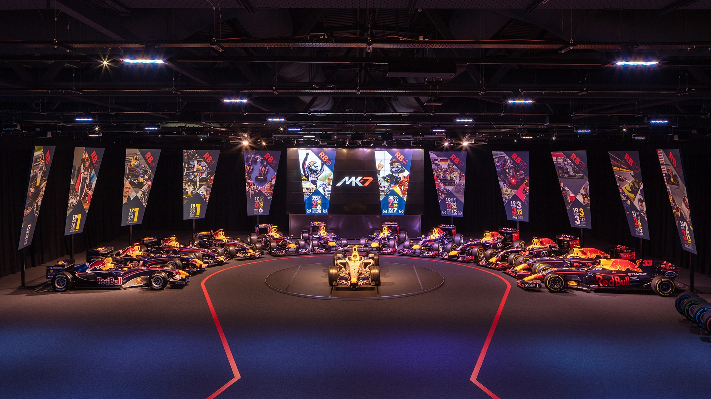

Red Bull

Max Verstappen
Den 24 år gamle nederlenderen har kjørt for laget siden 2016. Han har siden den tid sikkret seg 17 seiere, hvor den første av dem kom i hans første løp med Red Bull i Spania. Han har øvrige 52 pallplasseringer, 11 "pole positions" og 14 raskeste runder i løp. I år kjemper han mot Lewis Hamilton for sin første førermesterskapstittel.

Sergio Perez
Meksikaneren Sergio "Checo" Perez er 31 år gammel. Han kjører nå sin 10. sesong i Formel 1 og sin første for Red Bull. Før Red Bull har han vært innom andre lag som Sauber, Force India og Mclaren med totalt to seiere og fire raskeste runder. Hans beste plassering sammenlangt var i 2020 sesongen da han kom på 4. plass i førermesterskapet for laget Racing Point.
